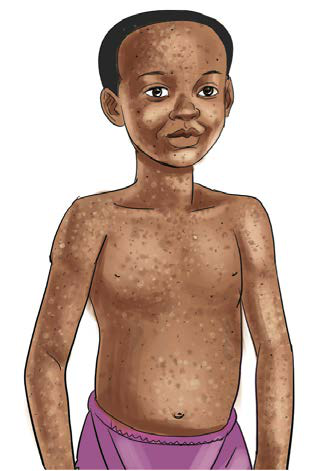

Exercise 3
1.
Explain how cholera is spread.
2.
How can you identify a person with cholera?
3.
What can you do to prevent cholera?
4.
Explain the importance of washing your hands with soap and clean water after using the toilet.
Chickenpox
Chickenpox is a highly infectious disease caused by a virus. It is spread from one person to another through the air when an infected person coughs or sneezes. It can also spread through direct contact with fluid from the blisters of an infected person.
Symptoms of chickenpox
A person with chickenpox develops an itchy skin rash that forms small fluid-filled blisters. The rash commonly begins on the face, chest and back before spreading to other parts of the body. Other symptoms include fever, tiredness, loss of appetite and headache. Figure 3 shows/describes a child with chickenpox.
